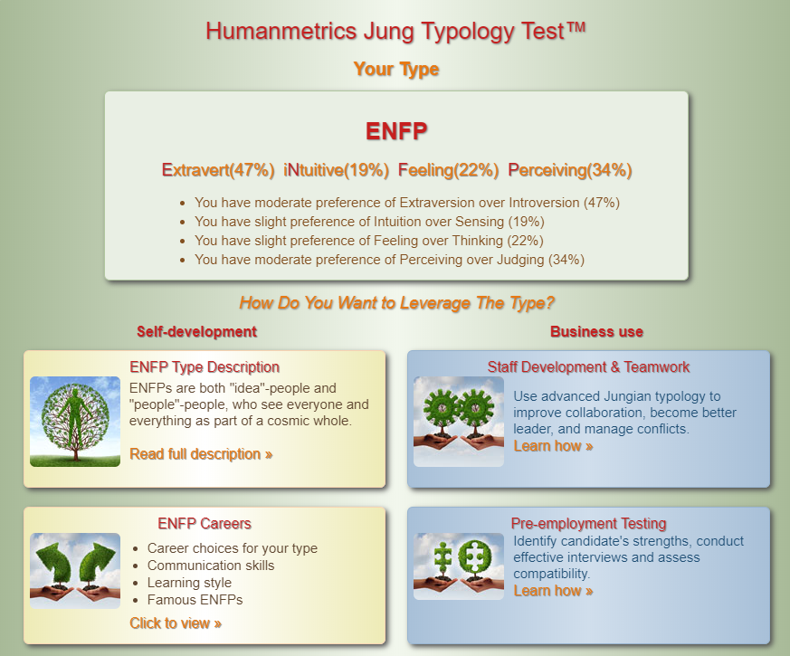
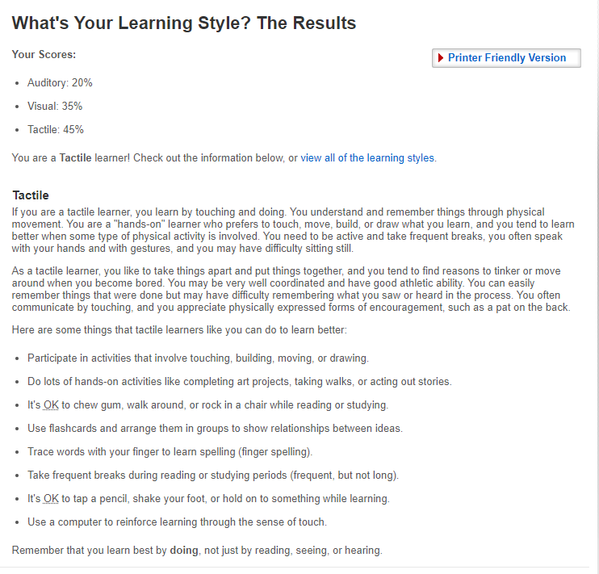
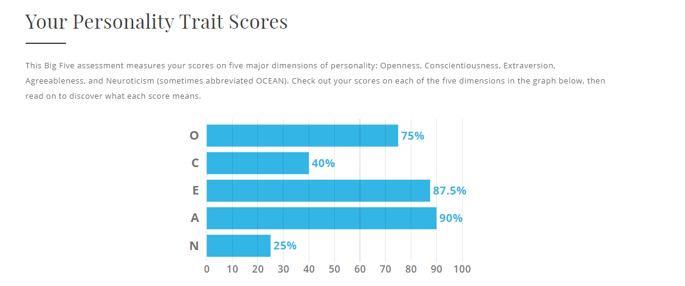
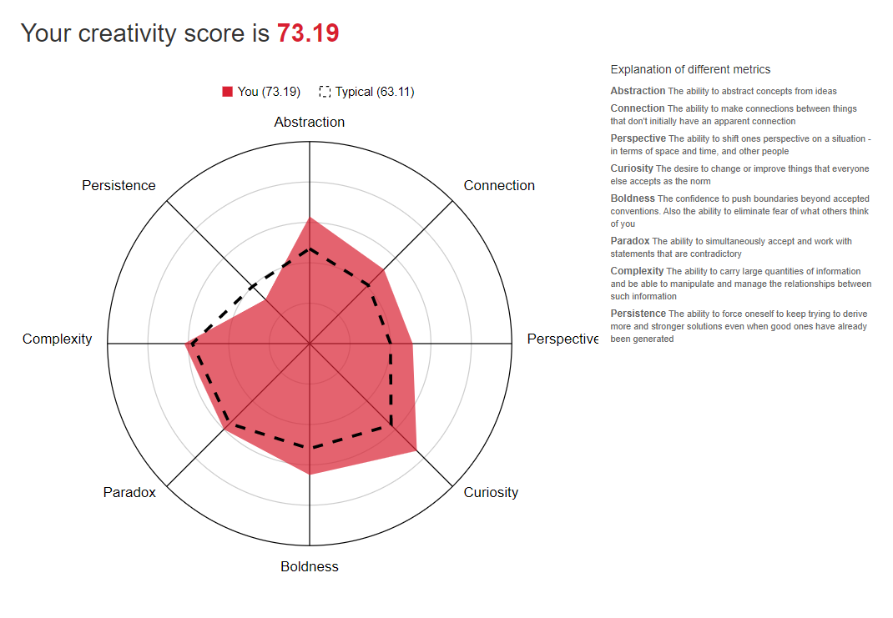

The Myers-Briggs test resulted in an ENFP (Extraverted, Intuitive, Feeling and Prospective). An ENFP result indicates that I am energetic, enthusiastic, curious, and friendly. Some weakness of being an ENFP consists of having difficulty to focus (shiny object syndrome), highly emotional and uninterested in mundane tasks. These traits describe me quite accurately
In a team environment, I would find it relatively easy to get along with everybody and make sure everyone is on board. This would mean supporting teammates, contributing to discussions, and ensuring that everyone is valued and included. When forming a team, it is crucial to build genuine relationships with people you work with. You would consider everyone’s strengths and weaknesses, brainstorming together and approaching the task as efficiently and creatively possible.
The result suggested that I am a tactile learner. A tactile learner means that I learn best by touching and doing. This result would influence my behavior during a team exercise because people do not learn the same way. For example, if a project meeting is being conducted through a phone, through a screen or sitting for long periods at a time, us tactile learners are more likely to tune out because it’s not our primary mode of learning. So when forming teams, I’d like everyone’s learning styles to be implemented. I’d solve this by visually displaying data, talking everyone through it while involving everyone in the process. Then perhaps leave time at the end of the meeting and discuss if anyone has any underlying issues. This would ensure the team stays on track, focused and motivated to learn.
The other test I took are the creativty test and personality test.
 Results are similar to the above and correspondend with each others.